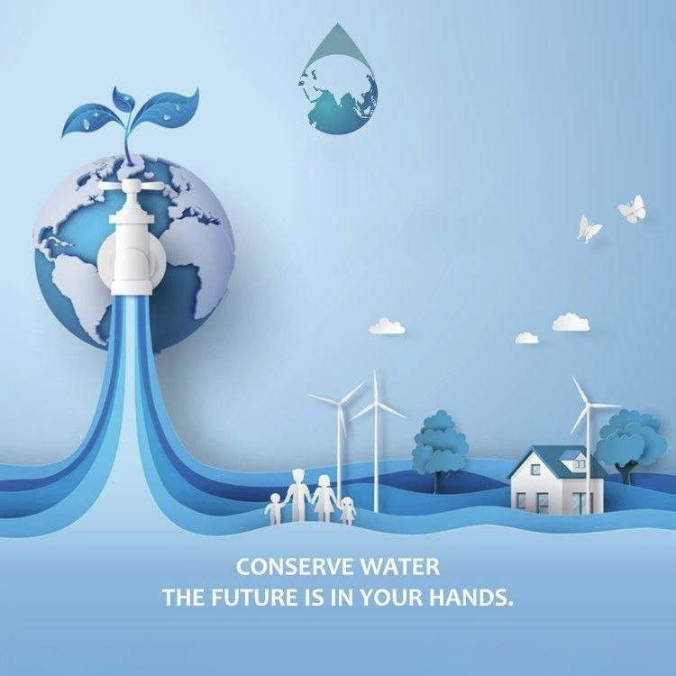
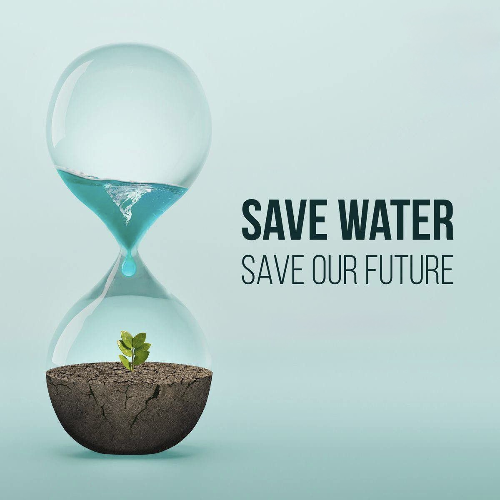

Water conservation is the practice of using water efficiently to reduce unnecessary waste. It ensures that future generations will have access to clean water. Simple actions like fixing leaks, turning off taps when not in use, and using water-saving appliances can make a big difference.
Many areas of the world face water shortages, so conserving water is crucial for both people and the environment. It helps protect aquatic ecosystems, reduce energy use, and lower water bills.
Technology plays a major role in water conservation. ICT (Information and Communication Technology) helps monitor water usage, detect leaks, and optimize water distribution systems.
For example, smart irrigation systems use sensors to water crops only when needed, saving thousands of liters of water. In cities, smart meters help households track their water consumption in real time, allowing them to reduce waste.
Governments and industries also use advanced data analytics to manage water supply efficiently. By applying modern technology, we can ensure that water is used wisely and sustainably.
